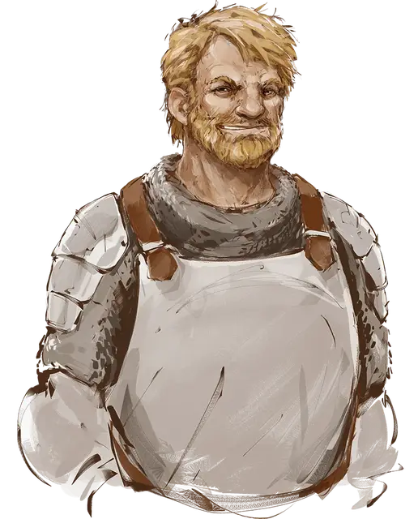

Мейлун Вардрагон
Meloon Wardragon
Средний Гуманоид (Человек), нейтрально-злой, именной НИП

Класс Доспеха 18 (латы)
Хиты 143 (22к8 + 44)
Скорость 30 футов
| мод | спас | ||
|---|---|---|---|
| СИЛ | 20 | +5 | +9 |
| ЛОВ | 15 | +2 | +2 |
| ТЕЛ | 14 | +2 | +6 |
| мод | спас | ||
|---|---|---|---|
| ИНТ | 10 | +0 | +0 |
| МДР | 14 | +2 | +2 |
| ХАР | 15 | +2 | +2 |
Навыки Атлетика +9, Выживание +6
Чувства тёмное зрение 60 футов, пассивное Восприятие 12
Языки Общий, Глубинная речь, Телепатия 60 фт.
Опасность 9 (5000 опыта)
Бонус мастерства +4
Особенности
Особое снаряжение. Мейлун владеет лазурным лезвием, но не может на него настроиться и не получает его преимуществ.
Второе дыхание (перезарядка после короткого или продолжительного отдыха). Бонусным действием Мейлун может восстановить 20 хитов.
Упорный (2/день). Мейлун может перебросить проваленный спасбросок, и обязан использовать новый результат
Действия
Мультиатака. Мейлун совершает четыре атаки лазурным лезвием.
Лазурное лезвие. Рукопашная атака оружием: +9 к попаданию, досягаемость 5 футов, одна цель. Попадание: 11 (1к12 + 5) рубящего урона.
Описание
Мейлун — привлекательный, но грозный молодой воин в расцвете сил. Он служит богине Тиморе и любит хорошую драку.
Друзья, среди которых Ренейр Неверембер и Ваджра Сафар, считают его честным, оптимистичным и невероятно везучим.
До недавних пор он был членом Серого Отряда и подчинялся напрямую Чёрному Посоху. Но в последние месяцы Мейлун проводит очень много времени в «Зияющем портале».
Три месяца назад Мейлун со скуки отправился с отрядом неопытных искателей приключений на вылазку в Подгорье. И тут его удача кончилась. Во время отдыха в подземелье на группу напали чудовища Занатара, в том числе несколько пожирателей интеллекта. Одна из этих тварей сумела магически поглотить мозг Мейлуна, превратив рыцаря Тиморы в марионетку. Прикончив своих ничего не подозревавших спутников, Мейлун вернулся в Глубоководье уже шпионом гильдии Занатара.
Пожиратель интеллекта, живущий в черепе Мейлуна, был создан Найхилюром, свежевателем разума на службе Занатара. Он знает всё, что знал Мейлун, так что Мейлун ведёт себя так же, как до спуска в Подгорье. В основном он убивает время в «Зияющем портале», знакомится с искателями приключений и предлагает им помощь при случае. Главная цель пожирателя интеллекта— увести любопытных подальше от Подгорья и отправить их на задания, помогающие Занатару. Обычно это касается уничтожения врагов Занатара — и Мейлун уж очень явно рвётся помогать в бою тем, кто поддаётся на его уговоры.
Изменения характеристик
Если Мейлуна убьют и вернут к жизни, его истинная суть восстановится и характеристики поменяются следующим образом:
- Мейлун — нейтрально добрый.
- Он теряет телепатию и способность говорить на Глубинном языке и понимать его.
- Он может настроиться на лазурное лезвие.